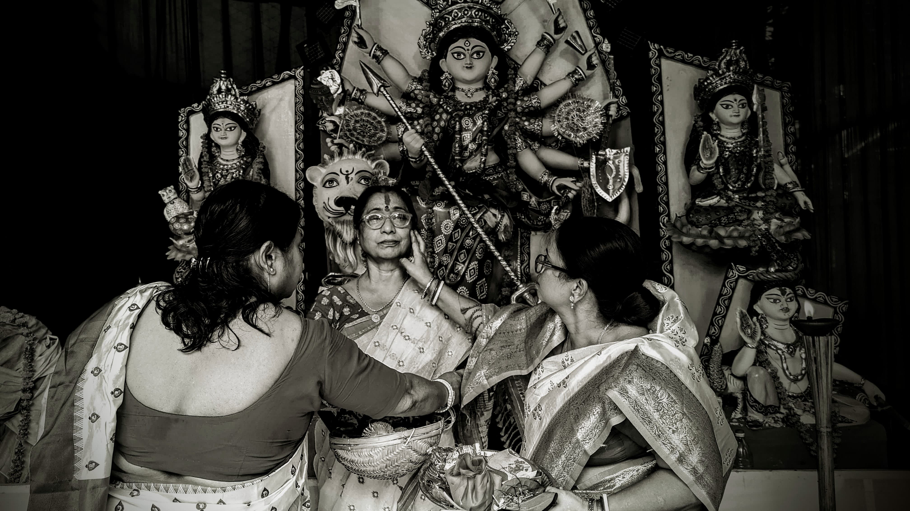

<h1>2.</h1>

<h2>This picture was taken in the morning of <a href="https://r.search.yahoo.com/_ylt=AwrKAU02WSpnHAIArre7HAx.;_ylu=Y29sbwNzZzMEcG9zAzIEdnRpZAMEc2VjA3Ny/RV=2/RE=1732038199/RO=10/RU=https%3a%2f%2fwww.anandabazar.com%2fananda-utsav%2fmyths%2fwhat-is-the-significance-of-bijaya-dashami-in-durga-puja-know-its-mythological-meaning-dgtl-photogallery%2fcid%2f1552510/RK=2/RS=eezQMoG08Xb78t7exGAk5kALn_Y-">Bijoya Dashami</a>    .Here the women are seen playing with colours and in bengali they say "Sindur Khela".</h2>